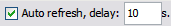

Job Submission Console
The Job Submission Console is used to display the status and history of batch process jobs or other jobs that have been submitted or scheduled for execution. Each row of the Jobs table provides information about successive jobs, including the job type and name, job ID, number of output files, job status, and start and end times.
From the Job Submission Console the user can display the history of a job, display and save any job output files, display a list of scheduled jobs and remove a scheduled job.
{kind=link}
The Job Submission Console consists of two tabs, the Jobs tab and the Schedules tab:
The Jobs tab
The jobs tab consists of:
The Job Submission Console Jobs toolbar facilitates the management of job execution. The icons on the tool bar are dynamic; they can be displayed or hidden depending on the status of the selected job.
{kind=link}
Refresh - Refresh the jobs list
{kind=link}
| Submitting a job does not automatically refresh the job list. |
Clear job - Clear the selected job(s) from the list
{kind=link}
Show history - Display the execution history of the selected job in the Output window
{kind=link}
Save - Save the output files of the selected job
{kind=link}
The following three icons will appear only if the currently selected job can be paused or stopped:
Pause - Pause the selected job. Not all jobs can be paused
{kind=link}
{kind=link}
Stop - Stop execution of the selected running job. The Stop action is always available for running flows, but not on all processes within the flow. If a process in a flow is not stoppable, no action will occur.
{kind=link}
Job server - Allows the user to display specific server lists
{kind=link}
Go to first page - Go to the first page of the jobs list
{kind=link}
Go to previous page - Go to the previous page of the jobs list
{kind=link}
Go to next page - Go to the next page of the jobs list
{kind=link}
Go to last page - Go to the last page of the jobs list
{kind=link}
Page Size - Set the number of jobs to be displayed on a single page on the jobs list
{kind=link}

{kind=link}
The console table, which includes the following columns:
- Jobs - job name assigned by the system.
- Type - type of job being run (BATCH_LABEL, IMPORT, BATCH_DEPLOY, etc.)
- Name - batch process flow name (currently the same as the Jobs name).
- ID - local record of the order in which the jobs have been submitted for processing.
- Outputfiles - number of files created by this job.
- Status - current status of the job:
- Scheduled - status of the scheduled execution (nothing is displayed if job is not a scheduled job):
- Start time - time and date the job was started.
- End time - time and date the job execution finished. If a scheduled job, end time is last execution of the job.
- Return code - indicates if the job is successfully executed. Its values can be set during job definition.
- Comments - contains the comments entered when the batch was submitted.
- Server - name of the server to which the job was submitted.
{kind=link}
{kind=link}
{kind=link}
{kind=link}
{kind=link}
{kind=link}
{kind=link}
At the bottom of the Jobs tab there is a bar showing the total number of jobs on the server:
{kind=link}
The Schedules tab
The Schedules tab consists of:
Job Submission Console Schedules toolbar - enables the user to display a list of scheduled jobs.
The schedule table which includes the following columns:
- ID - local record of the order in which the jobs have been submitted for processing.
- Status- current status of the jog
- Name - batch process flow name (currently the same as the Jobs name).
- Schedule expression - displays the scheduling expression (following the CRON specification) that will be used to trigger jobs
- Start Date- date and time that the first job schedule will be run
- End Date - date and time that the last job will be run
| The date and time at which scheduled jobs run is determined by the date/time set on the server, not the studio date/time. |